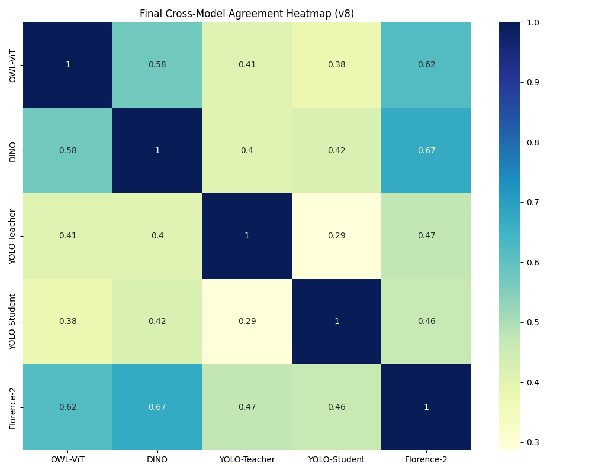

An Advanced Multimodal Pipeline Combining Foundational VLMs, Diffusion Restoration, and Self-Training
Brhanu Atsbaha | Master's Thesis
University of Hildesheim | 2024-2025
"From raw archival artifacts to structured semantic datasets."
CycleGAN
Historical → Modern Translation
Real-ESRGAN
4x Latent Super-Resolution
Stable Diffusion
Consistent Texture Refinement
Achieved a Semantic Restoration Score (SRS) improvement for labeling accuracy.

Strongest consensus: 0.672
Improved from 0.404 → 0.424
Precision
0.990
mAP50
0.994
mAP50-95
0.975
// LLaVA-OneVision Relational Triplets
(person, riding, horse)
(child, standing next to, horse)
(castle, located in, landscape)
Dataset
12,110 Images
Taxonomy
10+5 Classes
Inference
0.02s / img
Agreement
> 0.47 Mean
"Ready for Archival Preservation."